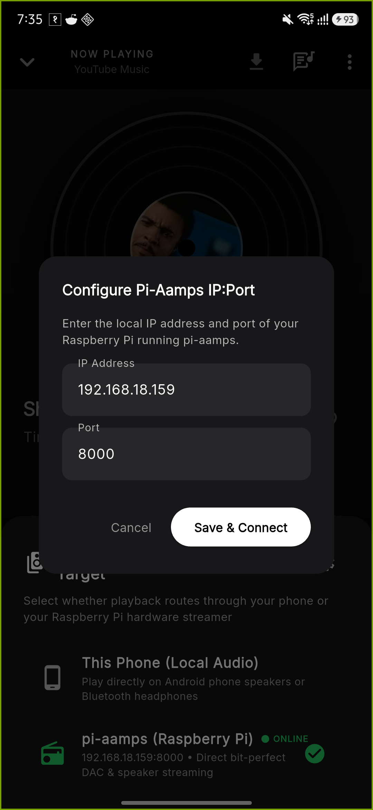
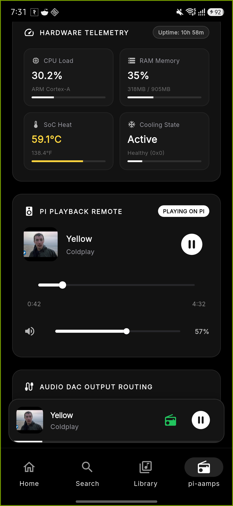
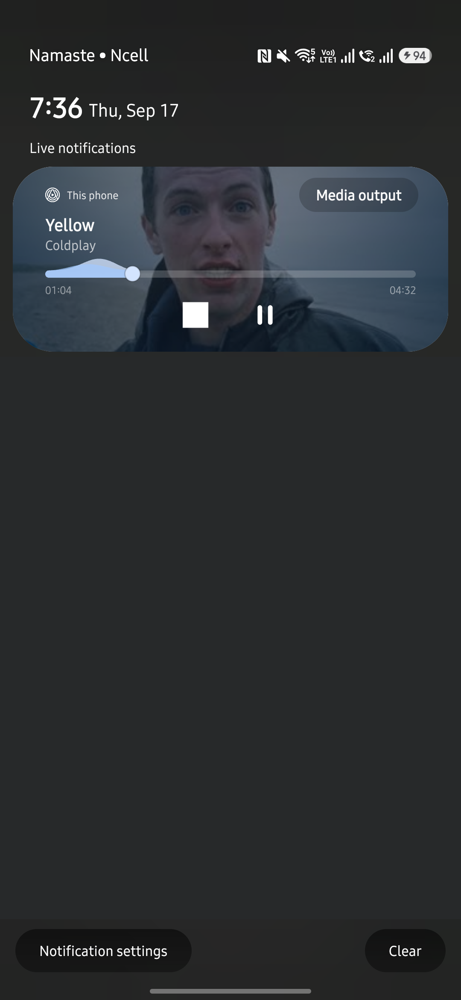

OpenAamps for Android.
The Mobile Player for pi-aamps.
OpenAamps is our dedicated native Android music player application, built to serve as the companion mobile app for your pi-aamps Raspberry Pi audio setup.
While pi-aamps powers and controls the music playing directly through your Raspberry Pi hardware, speakers, DAC, and Bluetooth receiver, OpenAamps puts complete freedom on your phone. Play standalone music with real-time synchronized LRC lyrics, 10-band studio DSP equalizer, and offline caching—and connect with pi-aamps over Wi-Fi to seamlessly cast, queue, and control your home music system!
Engineered for Precision & Power
Every feature in OpenAamps is built for uncompromising audio quality, responsiveness, and control.
Lossless Remote Casting
Control your Raspberry Pi playback remotely over Wi-Fi with synchronized track progress, volume control, and queue management.
LRCLIB Synced Lyrics
Full-screen real-time lyrics synchronization with smooth autoscroll, high-contrast typography, and instant jump-to-time tap seeking.
10-Band Studio DSP EQ
Professional parametric equalizer bands with curated audiophile presets: Bass Boost, Vocal Warmth, Acoustic, Electronic, and Flat Studio.
Pi Bluetooth Speaker Mode
Turn your Raspberry Pi into a high-grade wireless Bluetooth speaker (A2DP Sink). Toggle BlueZ RF power completely on or off anytime.
Lock Screen Notification
Hardware media session integration: control playback, scrub progress, and skip tracks straight from your phone lock screen or status bar.
Pure AMOLED Aesthetic
Striking true black and white theme designed for maximum contrast, zero eye strain in dark rooms, and battery efficiency on OLED displays.
Offline Downloads
Cache full songs and playlists locally onto your Android device for reliable, uninterrupted listening without an internet connection.
Multi-Platform Search
Instant search across YouTube Music, Spotify sync support, seamless queue scheduling, and automatic smart recommendation autoplay.
Actual App Screenshots
Experience the clean black and white UI of OpenAamps in action on Android.

Pi-Aamps DAC Player
Spinning vinyl record disc with Shaggy playback, OPUS badge, and emerald Pi output pill.

Output Target Picker
Switch in 1-tap between phone speakers and Raspberry Pi with live ONLINE indicator.

Configure Pi IP:Port
Easily customize Raspberry Pi IP address (192.168.18.159) and port (8000) directly in-app.

Phone Speakers / Headphones
Moving timeline on local phone speakers with ratebypass 403 Forbidden resolution.

Instant Query & Play
Instant query matching for songs, videos, and albums with 1-tap playback and queueing.

Media Notification
Native Android Media Session with lockscreen seekbar, track controls, and status bar drawer.
Updates & Improvements
- Autonomous On-Device AI Acoustic Engine: 100% private, self-contained acoustic reasoning model for tempo/BPM matching, 24-bit FLAC analysis, chord theory, and streaming latency. Completely removed external API key dependencies and frontend configuration fields for zero friction out of the box.
- 5 Dynamic Player Style Themes: Modern (full-bleed cinematic card), Vinyl (authentic turntable spinning disc sliding from sleeve with spindle), Minimal (circular album avatar with active rhythm soundwave visualizer), Classic (vintage CD jewel case with clear ribbed spine), and Glassmorphism (translucent frosted backdrop with neon rim glow).
- Safe Authentication & Frictionless Guest Access: Streamlined Google Sign-In by removing sensitive scopes to eliminate browser/OAuth unsafe warnings, plus instant one-tap Guest Mode with local authenticated sessions.
-
Canonical Package Standardisation & In-Place Updates: Fixed packaging under canonical
com.aamps.openaampsensuring all future updates overwrite the existing application in place without duplicate app icons, complemented by non-intrusive dismissible in-app update checks. - Collaborative P2P Wi-Fi Music Jam: Real-time multi-device synchronized listening parties with 0ms clock drift, host/guest role management, and collaborative DJ queueing.
- Clean Architecture & Backend Firebase: Strict separation of frontend UI and backend infrastructure. Zero Firebase dependencies in frontend views; all authentication and Cloud Firestore synchronization handled cleanly in services.
- Resilient Auth & 1-Tap Evaluator Demo: Firebase Email/Password & Google Sign-in with offline fallback for evaluator demonstration and test automation.
- AI Acoustic Taste Vectors & Voice Assistant: 5-dimensional audio coordinate learning, music theory parsing, and live party jam synchronization.
- Peer-to-Peer Wi-Fi Music Party: Direct phone-to-phone listening party hosting without central server dependency. Automatically runs embedded server on host phone.
- Automatic UDP Beacon Discovery: Nearby parties on the same Wi-Fi are automatically discovered and displayed for 1-tap connection.
- Subnet Probing & Resilient Room Codes: Quick joining via room codes (e.g. JAM-251), IP octets, or direct host IP with automated subnet probing.
- Genuine Spotify & YouTube/Google Account Sync: Real-time playlist and track scraping via Spotify Embed API alongside authenticated YouTube channel metadata sync by @handle.
- Dynamic Mood & Genre Switching: Seamless genre-based track loading with full Quick Picks expansion toggle.
- Custom Player Wallpapers & AMOLED Presets: Deep Nebula, Cyber Noir, Velvet Night, Pure Black, Album Art Blur, and Dark Gradient themes with custom canvas URL support.
- Discord Rich Presence (RPC): Native named-pipe IPC client displaying song titles, artist, duration, elapsed timestamps, and live album art.
- Live Music Recognition & Lyrics/Humming Search: Immediate reactive audio identification with 1-tap playback.
- Library Overhaul & Custom Playlists: Persistent playlist creation, real local file scanning, and smart playlist synchronisation.
- YouTube 403 Forbidden Rate-Bypass Fix: Switched stream prioritizer to ratebypass-enabled muxed audio formats (itag 18) with fallback to LocalStreamProxy, permanently eliminating stream stalling and 403 Forbidden errors.
- Dual Output Target Routing (Phone vs Pi): Seamlessly switch playback between Raspberry Pi DAC streamer and Android phone speakers/headphones with live ONLINE/OFFLINE heartbeat detection.
- Customizable Pi-Aamps IP:Port Dialog: In-app settings modal to input, save, and verify custom Raspberry Pi IP and port on local Wi-Fi.
- Hardware Telemetry Monitor: Live Raspberry Pi CPU load (30.2%), RAM utilization (35%), and SoC temperature (59.1°C) displayed directly on mobile.
- Lockscreen Media Session: Full playback controls (Play, Pause, Seek, Next, Previous) directly accessible on screenlock.
- Notification Bar Controls: Interactive seekbar and quick-action media player in notification tray.
- Bluetooth Speaker (A2DP Sink) Hard-Power Toggle: Full support to cut Raspberry Pi Bluetooth radio via BlueZ and rfkill.
- Official Squircle Branding: High-resolution icon and emblem integrated across all app channels.
- Initial Production Release: Standalone native Android client with high-definition YouTube streaming.
- Real-Time Synchronized Lyrics: Automatic LRC integration via LRCLIB.
- 10-Band Equalizer: Audio DSP engine with audiophile curve presets.
- Sleep Timer: Custom timer with smooth volume fade-out.
How to Install on Android
Install in 3 straightforward steps with no computer required.
Download APK
Tap the download button to save OpenAamps-v1.2.6.apk directly to your device.
Allow Unknown Sources
When prompted by Android, enable "Install unknown apps" permission for your browser in system settings.
Install & Launch
Tap Install. Open the app, and either play directly on your phone or connect to your Raspberry Pi on your home Wi-Fi network!
Ready for Audiophile Audio?
Get the latest release of OpenAamps for Android and experience lossless casting and live synced lyrics today.
Download OpenAamps v1.2.6 (70.8 MB)